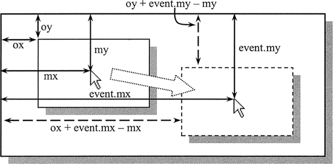

首页 > 编程笔记
JS mousemove事件：鼠标移动事件
在JavaScript 中，mousemove 事件是一个实时响应的事件，当鼠标指针的位置发生变化时（至少移动一个像素），就会触发 mousemove 事件。该事件响应的灵敏度主要参考鼠标指针移动速度的快慢以及浏览器跟踪更新的速度。
如下图所示，其中变量 ox 和 oy 分别记录按下鼠标时被拖放元素的纵横坐标值，它们可以通过事件对象的 offsetLeft 和 offsetTop 属性获取。变量 mx 和 my 分别表示按下鼠标时，鼠标指针的坐标位置。而 event.mx 和 event.my 是事件对象的自定义属性，用它们来存储当鼠标移动时鼠标指针的实时位置。
当获取了上面 3 对坐标值之后，就可以动态计算拖动中元素的实时坐标位置，即 x 轴值为 ox+event.mx-mx，y 轴为 oy+event.my-my。当释放鼠标按钮时，就可以释放事件，并记下松开鼠标指针时拖动元素的坐标值，以及鼠标指针的位置，留待下一次拖放操作时调用。
示例
下面示例演示了如何综合应用各种鼠标事件实现页面元素拖放操作的设计过程。实现拖放操作设计需要解决以下几个问题。- 定义拖放元素为绝对定位以及设计事件的响应过程，这个比较容易实现。
- 清楚几个坐标概念：按下鼠标时的指针坐标，移动中当前鼠标指针坐标，松开鼠标时的指针坐标，拖放元素的原始坐标，拖动中的元素坐标。
- 算法设计：按下鼠标时，获取被拖放元素和鼠标指针的位置，在移动中实时计算鼠标偏移的距离，并利用该偏移距离加上被拖放元素的原坐标位置，获得拖放元素的实时坐标。
如下图所示，其中变量 ox 和 oy 分别记录按下鼠标时被拖放元素的纵横坐标值，它们可以通过事件对象的 offsetLeft 和 offsetTop 属性获取。变量 mx 和 my 分别表示按下鼠标时，鼠标指针的坐标位置。而 event.mx 和 event.my 是事件对象的自定义属性，用它们来存储当鼠标移动时鼠标指针的实时位置。
当获取了上面 3 对坐标值之后，就可以动态计算拖动中元素的实时坐标位置，即 x 轴值为 ox+event.mx-mx，y 轴为 oy+event.my-my。当释放鼠标按钮时，就可以释放事件，并记下松开鼠标指针时拖动元素的坐标值，以及鼠标指针的位置，留待下一次拖放操作时调用。

整个拖放操作的示例代码如下：
<div id="box" ></div>
<script>
// 初始化拖放对象
var box = document.getElementById("box");
// 获取页面中被拖放元素的引用指针
box.style.position = "absolute"; // 绝对定位
box.style.width = "160px"; // 定义宽度
box.style.height = "120px"; // 定义高度
box.style.backgroundColor = "red"; // 定义背景色
// 初始化变量，标准化事件对象
var mx, my, ox, oy; // 定义备用变量
function e(event){ // 定义事件对象标准化函数
if( ! event){ // 兼容IE浏览器
event = window.event;
event.target = event.srcElement;
event.layerX = event.offsetX;
event.layerY = event.offsetY;
}
event.mx = event.pageX || event.clientX + document.body.scrollLeft;
// 计算鼠标指针的x轴距离
event.my = event.pageY || event.clientY + document.body.scrollTop;
// 计算鼠标指针的y轴距离
return event; // 返回标准化的事件对象
}
// 定义鼠标事件处理函数
document.onmousedown = function(event){ // 按下鼠标时，初始化处理
event = e(event); // 获取标准事件对象
o = event.target; // 获取当前拖放的元素
ox = parseInt(o.offsetLeft); // 拖放元素的x轴坐标
oy = parseInt(o.offsetTop); // 拖放元素的y轴坐标
mx = event.mx; // 按下鼠标指针的x轴坐标
my = event.my; // 按下鼠标指针的y轴坐标
document.onmousemove = move; // 注册鼠标移动事件处理函数
document.onmouseup = stop; // 注册松开鼠标事件处理函数
}
function move(event){ // 鼠标移动处理函数
event = e(event);
o.style.left = ox + event.mx - mx + "px"; // 定义拖动元素的x轴距离
o.style.top = oy + event.my - my + "px"; // 定义拖动元素的y轴距离
}
function stop(event){ // 松开鼠标处理函数
event = e(event);
ox = parseInt(o.offsetLeft); // 记录拖放元素的x轴坐标
oy = parseInt(o.offsetTop); // 记录拖放元素的y轴坐标
mx = event.mx ; // 记录鼠标指针的x轴坐标
my = event.my ; // 记录鼠标指针的y轴坐标
o = document.onmousemove = document.onmouseup = null;
// 释放所有操作对象
}
</script>
关注公众号「站长严长生」，在手机上阅读所有教程，随时随地都能学习。内含一款搜索神器，免费下载全网书籍和视频。

微信扫码关注公众号